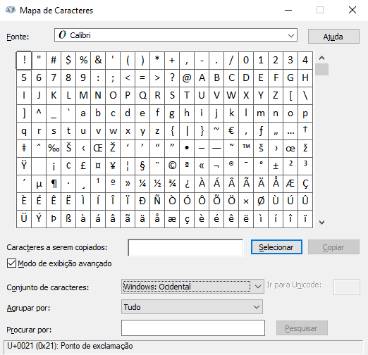

Teclados
Teclados são dispositivos com vários botões,sendo que cada um tem sua função (que geralmente é escrever letras ou números),seu layout é baseado nas antigas máquinas de escrever porém com mais teclas devido a funções dos computadores, ele era o principal dispositivo de controle dos computadores antes da chegada do mouse, pois todos funcinavam por comandos em uma interface de texto. Apesar de dividir a tarefa de controlar os computadores, ele ainda é o principal dispositivo de entrada de dados.
Como os teclados são padronizados, nem todos os caracteres existentes são gravados nele, alguns caracteres só podem ser escrito pressionando duas ou mais teclas como acentos, e outros necessitam de comandos específicos. Se você é usuário de windows pode usar a combinação das teclas windows + R para abrir o menu executar do windows, se você digitar charmap e der enter irá abrir em uma nova janela um quadro com todos os caracteres das fontes instaladas (algumas fontes não cobrem todos os caracteres especiais).
Menu executar do Windows

Mapa de caracteres do Windows.
Mapa de caracteres do Windows.
Estrutura/Funcionamento
Teclado Comum
Como já dito anteriormente o teclado é formado por um arranjo de teclas ou botões de forma semelhante as antigas máquinas de escrever, sendo aproximadamente 50% dos botões apenas para a inserção de caracteres. Essas teclas são ligadas a um chip dentro do teclado que detecta qual tecla foi pressionanda e envia a informação para o computadore por meio de cabos (os conectores mais comuns são PS/2 e USB) ou por meio de conexão sem fio (geralmente via bluetooth).
O número de teclas em um teclado padrão varia de 101 a 104 teclas, entretanto, considerando-se teclas de atalho e outros recursos, é comum encontrar teclados de até 130 teclas. Também há variantes compactas com menos de 90 teclas, geralmente encontradas em laptops e em computadores de mesa compactos.
Teclado de uma Maquina de Escrever
Cabo PS/2 para teclado